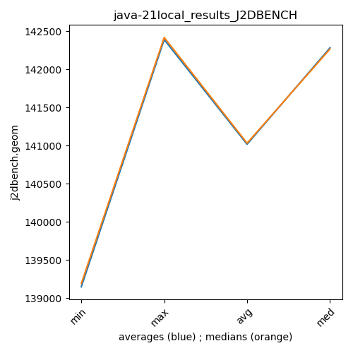

java-21 J2DBENCH
Context at bottom
/home/jvanek/git/benchmarks-in-nested-virtualisation-toolchain/final_results/local_results/local_results_J2DBENCH
java-21
J2DBENCH
local_results_J2DBENCH
final score
Expected number of java-21 JDKs: 7
1st avgmed_alljdks_metric:
/home/jvanek/git/benchmarks-in-nested-virtualisation-toolchain/final_results/result_processing.py /home/jvanek/git/benchmarks-in-nested-virtualisation-toolchain/final_results/local_results/local_results_J2DBENCH j2dbench.geom False
values: [142445, 142205, 142455, 142303, 142363, 142450, 142310, 142265, 142117, 142265, 142518, 142433, 142398, 142302, 142294, 142499, 142516, 142418, 142324, 142148, 139189, 139089, 139269, 138985, 139198, 139312, 139291, 139284, 139287, 139201, 139187, 139298, 139243, 139301, 139410]

Expected number of iterations: 5
final number of values: 35 out of 35
Pass rate: 100.0%
values: (138985, 142518, 141016.34285714285, 142205)

** accuracy from all jdks and runs
more is better
MIN: 138985
MAX: 142518
AVG: 141016.34285714285
MED: 142205
Relative differences 1:
MIN-MAX: 2.0 %
MIN-AVG: 1.0 %
MIN-MED: 2.0 %
MAX-MIN: -3.0 %
MAX-AVG: -1.0 %
MAX-MED: -0.0 %
AVG-MED: 1.0 %
stored to java-21.properties. sort | uniq that!
2nd avgmed_by_jdk_metric:
values: [142354.2, 142281.4, 142389.0, 142381.0, 139146.0, 139275.0, 139287.8]
values: [142363, 142265, 142398, 142418, 139189, 139287, 139298]

values: (139146.0, 142389.0, 141016.34285714285, 142281.4)
values: (139189, 142418, 141031.14285714287, 142265)

** accuracy from all jdks where runs were avged
more is better
MIN: 139146.0
MAX: 142389.0
AVG: 141016.34285714285
MED: 142281.4
Relative differences 1:
MIN-MAX: 2.0 %
MIN-AVG: 1.0 %
MIN-MED: 2.0 %
MAX-MIN: -2.0 %
MAX-AVG: -1.0 %
MAX-MED: -0.0 %
AVG-MED: 1.0 %
stored to java-21.properties. sort | uniq that!
** accuracy from all jdks where runs were medianed
more is better
MIN: 139189
MAX: 142418
AVG: 141031.14285714287
MED: 142265
Relative differences 1:
MIN-MAX: 2.0 %
MIN-AVG: 1.0 %
MIN-MED: 2.0 %
MAX-MIN: -2.0 %
MAX-AVG: -1.0 %
MAX-MED: -0.0 %
AVG-MED: 1.0 %
stored to java-21.properties. sort | uniq that!
/home/jvanek/git/benchmarks-in-nested-virtualisation-toolchain/final_results/local_results/local_results_SPECJBB
java-21
J2DBENCH
/home/jvanek/git/benchmarks-in-nested-virtualisation-toolchain/final_results/local_results/local_results_RADARGUNs1
java-21
J2DBENCH
/home/jvanek/git/benchmarks-in-nested-virtualisation-toolchain/final_results/local_results/local_results_RADARGUNs3
java-21
J2DBENCH
/home/jvanek/git/benchmarks-in-nested-virtualisation-toolchain/final_results/local_results/local_results_JMH
java-21
J2DBENCH
/home/jvanek/git/benchmarks-in-nested-virtualisation-toolchain/final_results/local_results/local_results_DACAPO
java-21
J2DBENCH
pass rates:
local_results_J2DBENCH=100.0%
Context:
- local_results
- J2DBENCH